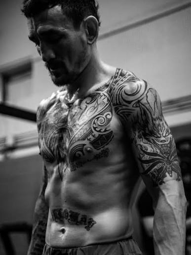

Max Holloway - Maestrul strikingului
Max Holloway este un luptător american de MMA, fost campion UFC la categoria featherweight.
Este cunoscut pentru combinațiile rapide de pumni, precizie și rezistență. Holloway folosește un volum mare de lovituri și menține presiunea asupra adversarilor săi.
Una dintre cele mai cunoscute victorii ale sale a fost împotriva lui Justin Gaethje la UFC 300, când a câștigat prin knockout în ultimele secunde.
